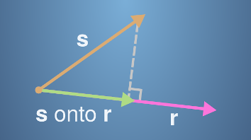
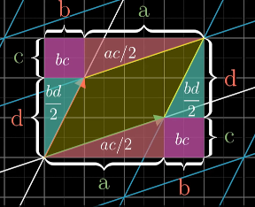

Linear Algebra
Table of Contents
1 Concepts
- Linear Combinations
- \(a\vec{v}+b\vec{w}\) is the linear combination of \(\vec{v}\) and \(\vec{w}\), \(a\) and \(b\) are scalars.
- Span
- The "span" of \(\vec{v}\) and \(\vec{w}\) is the set of all their linear combinations.
- Linearly Dependent
- one of the vectors can be expressed as a linear combination of the others since it's already in the span of the others. i.e. \(\exists{a}\exists{b} | \vec{u} = a\vec{v} + b\vec{w}\)
- Linearly Independent
- \(\forall{a}\forall{b} | \vec{u}\ne a\vec{v}+b\vec{w}\)
- Definitions treats all vectors equally: \(a\vec{v}+b\vec{w}+c\vec{u}=\vec{0}\) if the only solution is \(a=b=c=0\)
- Basis
- The basis of a vector space is a set of linearly independent vectors that span the full space.
- Rank
- The number of dimensions in the output of a linear transformation. i.e. in the column space.
- Column Space
- "Column Space" of \(A\) is the set of all possible outputs \(A\vec{v}\)
- Null Space / Kernel
- The set of vectors that lands on the origin in a linear transformation is called the "null space" or the "kernel".
- Eigenvectors
- Eigenvector is a vector that changes at most by a scalar factor when that linear transformation is applied to it.
- Eigenvalues
- Eigenvalue is the factor by which the eigenvector is scaled, denoted by \(\lambda\)
2 Vector
2.1 Addition
- Commutative: \(\vec{a}+\vec{b}=\vec{b}+\vec{a}\)
- Associativity: \((\vec{a}+\vec{b}) + \vec{c}=\vec{a} + (\vec{b} + \vec{c})\)
- Additive Identity: There exists an element \(\vec{0}\) such that \(\vec{a}+\vec{0}=\vec{a}\)
- Additive Inverse: \(\forall{\vec{a}}\exists{\vec{b}}\vec{a}+\vec{b}=\vec{0}\)
- Multiplicative Identity: \(\forall{\vec{a}}\vec{1}\vec{a}=\vec{a}\)
- Distributive: \(s(\vec{a}+\vec{b})=s\vec{a}+s\vec{b}\)
2.2 Magnitudes(Modulus)
\[\vec{a} = \begin{bmatrix}x \\ y\end{bmatrix}\] \[\left\|\vec{a}\right\|=\sqrt{x^2+y^2}\]
- \(\left\|\vec{a}\right\|\) is the length of a vector.
2.3 Multiplication(Dot Product)
Geometric Meaning
Cosine Rule: \(c^2=a^2+b^2-2ab\cos{\theta}\) \[\left\|\vec{x}-\vec{y}\right\|^2=\left\|\vec{x}\right\|^2 + \left\|\vec{y}\right\|^2 - 2\left\|\vec{x}\right\|\left\|\vec{y}\right\|\cos{\theta}\] \[\because\left\|\vec{x}\right\|^2 = \vec{x}\cdot\vec{x}\mathbf{\ and\ }(\vec{x}-\vec{y})\cdot(\vec{x}-\vec{y})=\vec{x}\cdot\vec{x}+\vec{y}\cdot\vec{y}-2\vec{x}\cdot\vec{y} \mathbf{\ Distributive Rule}\] \[\vec{x}\cdot\vec{y}=\left\|\vec{x}\right\|\left\|\vec{y}\right\|\cos{\theta}=\left\|\vec{x}\right\|\times\mathbf{projection\ y\ on\ x}\] \[\frac{\vec{x}\cdot\vec{y}}{\left\|\vec{x}\right\|}=\left\|\vec{y}\right\|\cos\theta \text{(scalar projection)}\]
- \(\left\|\vec{y}\right\|\cos{\theta}\) is the scalar projection of \(\vec{y}\) on \(\vec{x}\)
- Dot product = (Length of projected \(\vec{y}\) on \(\vec{x}\)) * (Length of \(\vec{x}\))
- Dot product is also called projection product.
- When the vectors are Perpendicular, meaning dot product is 0. (scalar projection is 0)
Vector Projection

- The scalar projection is the size of the green vector. \(\frac{\vec{s}\cdot\vec{r}}{\left\|\vec{r}\right\|}\)
- The vector projection is the green vector and can be calculated
\[\mathbf{vector\ projection}=\mathbf{scalar\ projection}\times\frac{\vec{r}}{\left\|\vec{r}\right\|}=\frac{\vec{s}\cdot\vec{r}}{\left\|\vec{r}\right\|}\times\frac{\vec{r}}{\left\|\vec{r}\right\|}=\frac{\vec{s}\cdot\vec{r}}{\vec{r}\cdot\vec{r}}\cdot \vec{r}\]
- \(\frac{\vec{r}}{\left\|\vec{r}\right\|}\) is the unit length of \(\vec{r}\)
- \(\frac{\vec{s}\cdot\vec{r}}{\vec{r}\cdot\vec{r}}\) is the new coordinate of \(\vec{s}\) on \(\vec{r}\)
Definition
\[\vec{x}\cdot\vec{y}=\sum_{i=1}^n x_i y_i\]
Rules
- Commutative
- Distributive over Addition: \(\vec{a}(\vec{b}+\vec{c})=\vec{a}\vec{b}+\vec{a}\vec{c}\)
- \(\vec{a}\cdot(s\vec{b})=s(\vec{a}\cdot\vec{b})\)
- \(\vec{a}\cdot\vec{a}=\left\|\vec{a}\right\|^2\)
3 Matrix
Matrices make transformations on vectors, potentially changing their magnitude and direction.
- Matrix Multiplication isn't commutative, but associative. \[A\cdot B \ne B\cdot A\] \[A\cdot (B \cdot C) = (A\cdot B) \cdot C\]
3.1 Rotation Matrix
- 2D
\[\begin{bmatrix} \cos\theta & \sin\theta \\ -\sin\theta & \cos\theta \end{bmatrix}\]
- 3D
\[\begin{bmatrix} \cos\theta & \sin\theta & 0 \\ -\sin\theta & \cos\theta & 0 \\ 0 & 0 & 1 \end{bmatrix}\]
3.2 Determinants
The determinant represents the scale factor by which areas are transformed by the Matrix. Video
2D

\[A=\begin{bmatrix} a & b \\ c & d \end{bmatrix}\] The determinant is the area \(det(A)=ad-bc\)
3D
\[A=\begin{bmatrix} a & b & c \\ d & e & f \\ g & h & i \end{bmatrix}\] \[det(A)=a\cdot det(\begin{bmatrix}e & f \\ h & i\end{bmatrix})-b\cdot det(\begin{bmatrix}d & f \\ g & i\end{bmatrix})+c\cdot det(\begin{bmatrix}d & e \\ g & h\end{bmatrix})\]
Rules
- The determinant is 0 means the transformation takes the basis vectors into vectors that are linearly dependent.
- \(det(AB)=det(A)det(B)\)
3.3 Matrix Inverses
\[A^{-1}\cdot A=I\] \[A\cdot \mathbf{r} = \mathbf{s}\] \[A^{-1}\cdot A\cdot \mathbf{r}=A^{-1}\cdot\mathbf{s}\] \[I\mathbf{r}=A^{-1}\cdot\mathbf{s}\]
- \(\mathbf{r}\cdot A = \mathbf{s}\) inverse: \(\mathbf{s}\cdot A^{-1} = \mathbf{r}\)
- our goal is to find \(A^{-1}\)
Singular
If a matrix is singular, that means an inverse doesn't exist.
3.4 Python Code
import numpy as np A = [[1, 1, 3], [1, 2, 4], [1, 1, 2]] Avin = np.linalg.inv(A) Avin.dot(A) # => Identity Matrix s = [5, 8, 9] r = np.linalg.solve(A, s) # => array([10., 7., -4.])
3.5 Dot Product
- Einstein's summation notation for \(\mathbf{C=AB}\) \[c_{ik}=a_{ij} b_{jk}\]
- Vector: \(\mathbf{r'=Ar}\) \[r^\prime_i=A_{ij}r_j\]
- Matrix: \(\mathbf{R'=AR}\) \[R^\prime_{ia}=A_{ij}R_{ja}\]
3.6 TODO Cross Product
4 Eigenvectors
\[\mathbf{T}\vec{v}=\lambda\vec{v}\] \[\mathbf{T}\vec{v}-\lambda \mathbf{I} \vec{v}=\vec{0}\] \[(\mathbf{T}-\lambda \mathbf{I})\vec{v}=\vec{0}\] \(det(\mathbf{T}-\lambda \mathbf{I})\) should be 0 to transform a non-zero \(\vec{v}\) into \(\vec{0}\)
4.1 Example
To calculate \(T^{10}\), we could use the eigenbasis. \[T=\begin{bmatrix}3 & 1 \\ 0 & 2\end{bmatrix}\]
Find Eigenvalues
\[(3-\lambda)(2-\lambda) - 1\times 0 = 0\]
- The eigenvalues are (3, 2)
- Tricky way to find eigenvalues \[m=\frac{\lambda_1+\lambda_2}{2}=\frac{a+d}{2}\] \[p=\lambda_1 \lambda_2=det(\mathbf{T})=ad-bc\] \[\lambda=m\pm\sqrt{m^2-p}\]
Find Eigenvectors
- \(@\lambda_1=3\) \[\begin{bmatrix}3-3 & 1 \\ 0 & 2-3 \end{bmatrix}\begin{bmatrix}x_1 \\ x_2\end{bmatrix}=\begin{bmatrix}x_2 \\ -x_2\end{bmatrix}=\begin{bmatrix}0 \\ 0\end{bmatrix}\] \(x_1\) can be any real number.
- \(@\lambda_2=2\) \[\begin{bmatrix}3-2 & 1 \\ 0 & 2-2 \end{bmatrix}\begin{bmatrix}x_1 \\ x_2\end{bmatrix}=\begin{bmatrix}x_1+x_2 \\ 0\end{bmatrix}=\begin{bmatrix}0 \\ 0\end{bmatrix}\] \(x_1 + x_2\) must be 0.
Use Eigenbasis
- Choose eigenvectors: \(C=\begin{bmatrix}1 & 1\\ 0 & -1\end{bmatrix}\)
- Diagonal matrix: \(D=\begin{bmatrix} \lambda_1 & 0 \\ 0 & \lambda_2\end{bmatrix}=\begin{bmatrix}3 & 0 \\ 0 & 2\end{bmatrix}\)
- \(D=C^{-1}TC\)
- \(T^{10}=CD^{10}C^{-1}\)
5 Basis Transformation
\[\mathbf{B}\cdot\begin{bmatrix} x_{new} \\ y_{new} \end{bmatrix}=\begin{bmatrix} x_{old} \\ y_{old} \end{bmatrix}\] \[\mathbf{B^{-1}}\cdot \begin{bmatrix} x_{old} \\ y_{old} \end{bmatrix}=\begin{bmatrix} x_{new} \\ y_{new} \end{bmatrix}\]
- \(B\) is the new basis written in old basis language.
- \(B^{-1}\) is the old basis written in new basis language.
5.1 The Gram–Schmidt process
The process to construct an orthonormal basis.
- Given an linearly independent vector set V
\[V=\{v_1, v_2, \cdots, v_n\}\]
\(e_1\)
\[e_1=\frac{v_1}{|v_1|}\]
\(e_2\)
\[v_2=\frac{v_2\cdot e_1}{|e_1|}\frac{e_1}{|e_1|}+u_2\]
- \(u_2\) is perpendicular to \(e_1\)
\[u_2=v_2-(v_2\cdot e_1)e_1\] \[e_2=\frac{u_2}{|u_2|}\]
\(e_3\)
\[u_3=v_3-(v_3\cdot e_1)e_1-(v_3\cdot e_2)e_2\]
- \(u_3\) is perpendicular to the plane(\(e_1\), \(e_2\))
\[e_3=\frac{u_3}{|u_3|}\]
6 Python Code
import numpy as np import scipy # create matrix A = np.array([[1, 2], [3, 4], [5, 6]]) # create vector v = np.array([[1], [2], [3]]) v = np.array([[1, 2, 3]]).T v = np.array([1, 2, 3]).reshape(3, 1) v = np.array([1, 2, 3]).reshape(-1, 1) # dot product A.T @ v A.T.dot(v) np.dot(A.T, v)
6.1 Convenience Constructors
np.zeros,np.onesnp.random.rand: 0 to 1, taken from a uniform distributionnp.random.randn: from a normal distribution with zero mean and unit variance
6.2 scipy.linalg
from scipy import linalg import numpy as np v = np.array([1, 2, 3]).reshape(-1, 1) # Magnitude (length of a vector) sqrt(x**2+y**2) magnitude = linalg.norm(v) # Scalar projection x = np.array([2, 3]) y = np.array([4, 5]) scalar_proj_y_on_x = np.dot(x, y) / linalg.norm(x) # Vector projection vector_proj_y_on_x = np.dot(np.dot(x, y)/np.dot(x,x), x) # Inverse matrix A = np.array([[1, 1, 3], [1, 2, 4], [1, 1, 2]]) Ainv = linalg.inv(A) # Cross product v1 = [1, 1, 3] v2 = [1, 2, 4] v3 = np.cross(v1, v2) # v3 is a vector perpendicular to both v1 and v2 (right-hand rule) # Solve y = np.array([5, 8, 5]).reshape(-1, 1) x = linalg.solve(A, y)
- Eigenvalues
import numpy as np from scipy import linalg T = np.array([[1, 1], [0, 2]]) lambda1, lambda2 = linalg.eigvals(T) #=>array([1.+0.j, 2.+0.j])